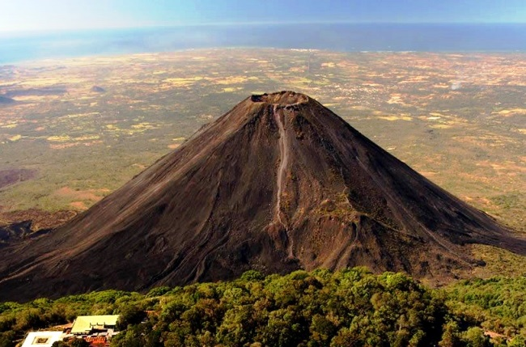
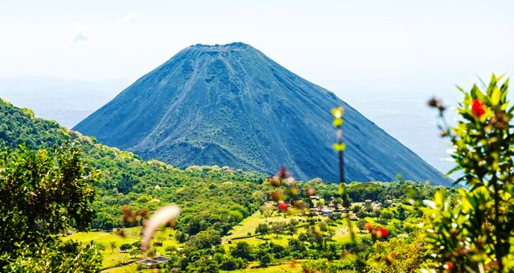
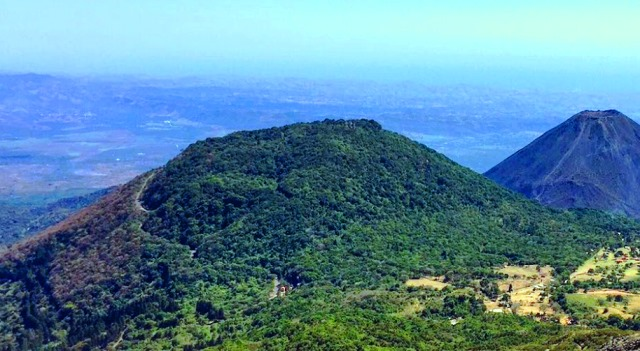
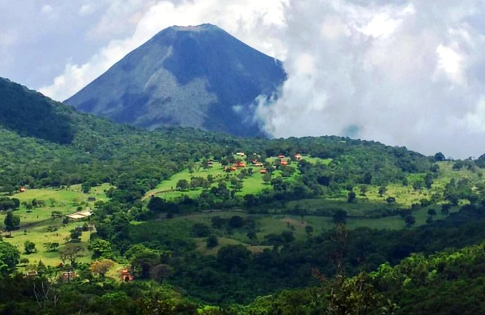
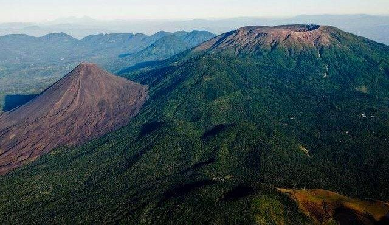
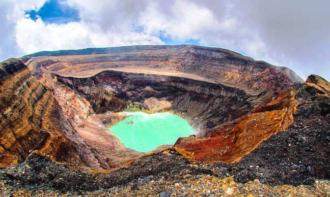
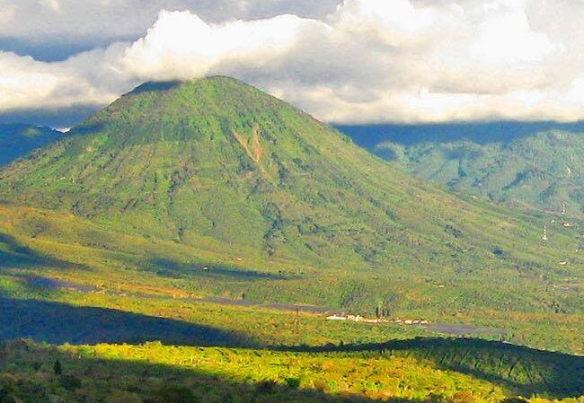

Volcanes de El Salvador
El Salvador se encuentra ubicado en la zona del Cinturón del Pacifico, por lo que a pesar de ser un país pequeño cuenta con casi un centenar de volcanes, de los cuales solo algunos se encuentran activos en la actualidad. A lo largo del tiempo esta zona ha sido conocida como “el valle de las hamacas”, ya que debido a la presencia de estas enormes creaciones de la naturaleza han existido numerosas erupciones y terremotos.
Sin embargo, los volcanes de El Salvador han sido también una parte importante para el turismo nacional, ya que llaman la atención a los turistas que desean escalar o subir a la cima de sus cráteres para contemplar los paisajes que desde ahí pueden observarse y al mismo tiempo contemplar lo maravillosa que es la naturaleza.
El volcán más alto de El Salvador es el volcán de Santa Ana o volcán Ilamatepeq, el cual tiene una altura de 2,381 metros.
Los volcanes activos con mayor actividad en la actualidad son el Volcán de San Salvador, Volcán de Santa Ana, Volcán de San Miguel, volcán de San Vicente, Volcán de Ilopango y volcán de Izalco.
Izalco es uno de los más jóvenes de El Salvador y el continente americano, se originó en 1770, cuando un orificio en la falda del volcán de Santa Ana empezó a lanzar humo y cenizas. Por mucho tiempo fue conocido como El Faro del Pacífico, ya que desde su formación estuvo erupcionando casi sin cesar durante 196 años.
Siempre que visites los volcanes se recomienda hacerlo con un guía turístico que te oriente en la zona, ya que en algunos casos podrías perderte en el camino. También se recomienda ir con ropa cómoda y zapatos adecuados, porque el viaje suele ser por lugares donde es necesario caminar.
Volcán de Izalco
Los volcanes son formaciones naturales que impresionan y llaman la atención de muchas personas incluso cuando ya pueden haber pasado siglos desde la última vez que presentaron actividad; dado a que es del interés de muchos es que aquí se compartirán algunos de los principales elementos del volcán de Izalco.
Un elemento físico que se puede destacar en relación al volcán de Izalco es su altura que se ha llegado a calcular que presenta más de mil novecientos metros por encima del nivel del mar, los especialistas en el área han establecido que el cráter de este volcán posee doscientos cincuenta metros de diámetro; al mismo tiempo, se puede hacer mención al hecho de que este volcán cuenta con una superficie mayor a las mil doscientas hectáreas.


Se ha detectado que el origen de este volcán es bastante reciente en comparación con los otros que se pueden observar en la República de El Salvador e incluso en todo el centro de América; Jorge Lardé y Larín defendió la idea de que el volcán de Izalco se formó por una erupción en el año de mil novecientos veintidós.
De acuerdo a los registros la última erupción que se ha presentado en el volcán de Izalco se presentó en el año de mil novecientos cincuenta y ocho; no obstante, posteriormente se detectó actividad en esta zona en el año de mil novecientos sesenta y seis, a partir de ese año no se ha vuelto a detectar actividad de este volcán; en la actualidad se puede considerar a este como uno de los pocos volcanes activos en El Salvador a pesar de estar en reposo.
Volcán Cerro Verde
Contando con, de acuerdo a los expertos en el tema, dos mil treinta metros por encima del nivel del mar de forma aproximada Cerro Verde es un enorme atractivo natural que posee la República de El Salvador.
A este volcán también se le suele encontrar por el nombre de Cuntetepeque; para evitar y/o prevenir la formación de dudas con respecto a este es que aquí se mostrarán algunas de sus características que más llaman la atención de los turistas.



Características de Cerro Verde
Una de las características de Cerro Verde que se pueden destacar en una primera instancia es el hecho de que los expertos lo han clasificado como un volcán extinto, esto significa que ha pasado una enorme cantidad de tiempo desde la última vez que entró en erupción, de acuerdo a los que estudian esta área la última actividad que tuvo Cerro Verde se presentó hace veinticinco mil años aproximadamente.
Otro elemento que se puede considerar de importancia con respecto al volcán Cerro Verde es que el mismo cuenta con un ecosistema con una exuberante biodiversidad en donde se han podido observar más de cien especies de aves.
Por otra parte, Cerro Verde posee una importante masa forestal al presentar un ecosistema con un clima frío y con mucha humedad que lo permite.
Volcán de Santa Ana
Es mucha la gente a la que le gusta explorar la naturaleza y en El Salvador existen varias zonas interesantes para ello como es el caso del Volcán de Santa Ana; para facilitar la elección sobre visitarle o no es que aquí se compartirán sus principales elementos.
Características del volcán de Santa Ana
Lo primero por lo que se tiende a caracterizar al volcán de Santa Ana es por ser el volcán de mayor altura que se puede encontrar en la República de El Salvador contando con más de dos mil metros por encima del nivel del mar, siendo el tercero de los puntos más altos de toda la nación; para ser más específicos se ha calculado que la altura de esta formación es de dos mil trecientos ochenta y un metros sobre el nivel del mar de forma aproximada.


Como ya se ha mencionado antes, el volcán de Santa Ana cuenta con una magnitud tan grande que se extiende por dos municipios, en este aspecto se ha llegado a determinar que este volcán cuenta con una superficie de dos mil ciento diez hectáreas; por otra parte, se ha calculado que el cráter de este volcán cuenta con un diámetro que mide alrededor de un kilómetro y medio.
La última erupción que se presentó en el volcán de Santa Ana se remonta a poco más de una década atrás en el año de dos mil cinco; debido al poco tiempo que se ha presentado desde los últimos indicios de actividad por parte de esta formación natural es que los expertos todavía lo clasifican como un volcán activo, que actualmente se encuentra en descanso, tendrán que pasar muchas décadas más antes de que se le cambie esta categoría.